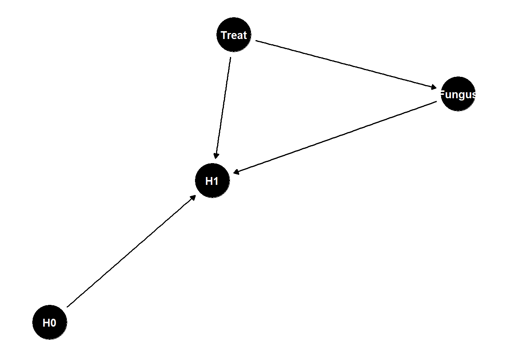
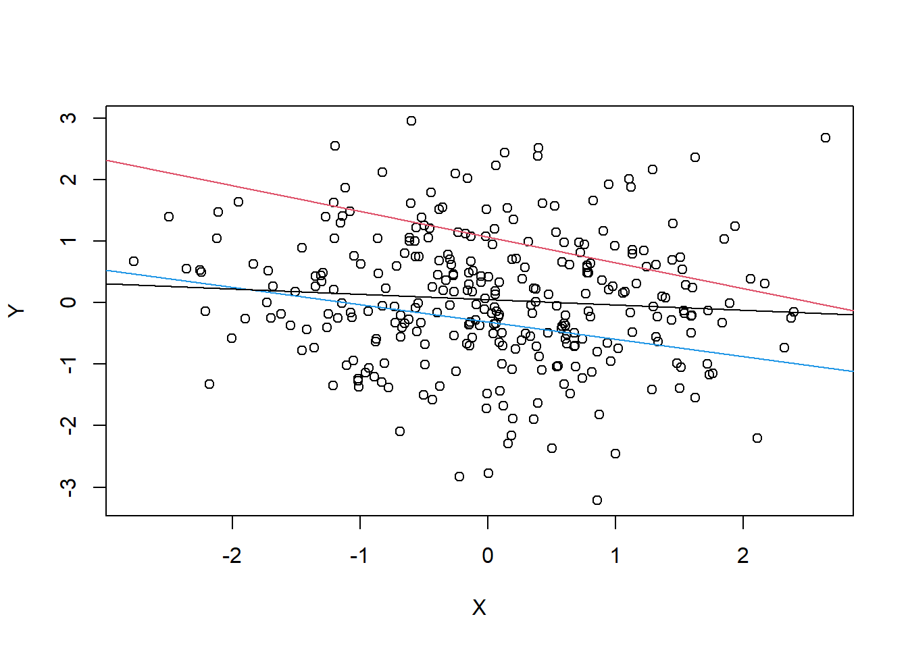
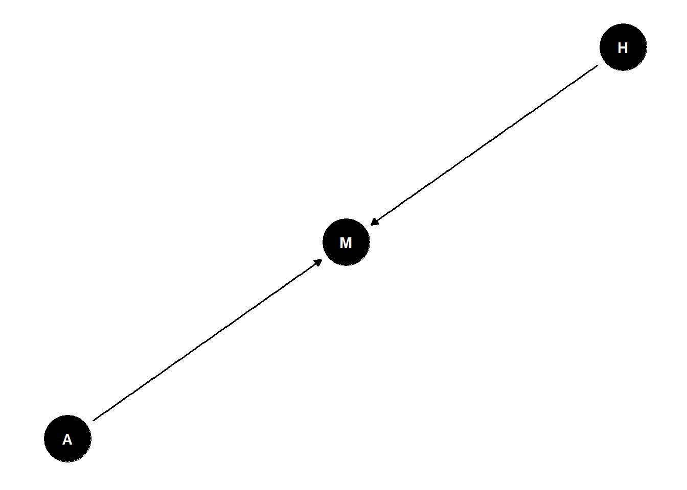

dag <- dagify(
X ~ Z,
Y ~ Z
)
ggdag(dag) +
theme_dag()
Rose: completely changed my approach to science
Thorn: why set M and not A in intervention?
dag <- dagify(
X ~ Z,
Y ~ Z
)
ggdag(dag) +
theme_dag()
n <- 1000
Z <- rbern(n, 0.5)
X <- rbern(n, (1-Z)*0.01 + Z*0.9)
Y <- rbern(n, (1-Z)*0.01 + Z*0.9)
# correlated
cor(X, Y)[1] 0.7954034# no longer correlated when we pull out Z
cor(X[Z==0], Y[Z==0])[1] -0.008153667cor(X[Z==1], Y[Z==1])[1] -0.004019122cols <- c(4,2)
n <- 300
Z <- rbern(n, 0.5)
X <- rnorm(n, (1-Z)*0.01 + Z*0.9)
Y <- rnorm(n, (1-Z)*0.01 + Z*0.9)
plot(X, Y, col=cols[Z+1]) +
abline(lm(Y[Z==1] ~ X[Z==1]), col = 2) +
abline(lm(Y[Z==0] ~X[Z==0]), col = 4) +
abline(lm(Y~ X))
integer(0)example:
why do regions of the USA with higher rates of marriage also have higher rates of divorce?
estimand: causal effect of marriage rate on divorce rate
dag <- dagify(
D ~ A,
M ~ A,
D ~ M
)
ggdag(dag) +
theme_dag()
causes are not in the data
is effect of marriage rates on divorce rates just a symptom of common cause age?
need to break the fork to test direct effect – stratify by A
continuous variable stratification means that we are adding to that variable essentially to the intercept
stratifying means for every level of the stratified value, what is the association between the other two variables?
what does this mean for continuous variables?
every value of A produces a different relationship between D and M
\[ \mu_i = (\alpha + \beta_A*A) + B_D*D \]
standardizing variables is almost always helpful in linear regression
to stratify by A, include as a term in the linear model:
\(D _i \sim Normal(\mu _i, \sigma)\)
\(\mu _i = \alpha + \beta_MM_i + \beta_AA_i\)
\(\alpha \sim Normal(0, 0.2)\)
\(\beta_M \sim Normal(0,0.5)\)
\(\beta_A \sim Normal(0, 0.5)\)
\(\sigma \sim Exponential(1)\)
library(rethinking)
data(WaffleDivorce)
d <- WaffleDivorce
# model
dat <- list(
D = standardize(d$Divorce),
M = standardize(d$Marriage),
A = standardize(d$MedianAgeMarriage)
)
m_DMA <- quap(
alist(
D ~ dnorm(mu,sigma),
mu <- a + bM*M + bA*A,
a ~ dnorm(0,0.2),
bM ~ dnorm(0,0.5),
bA ~ dnorm(0,0.5),
sigma ~ dexp(1)
) , data=dat )
plot(precis(m_DMA))
a causal effect is a manipulation of the generative model, an intervention
distribution of D when we intervene (“do”) M \(p(D|do(M))\)
post <- extract.samples(m_DMA)
# sample A from data
n <- 1e3
As <- sample(dat$A, size = n, replace = T)
# simulate D for M=0 (sample mean)
DM0 <- with(post, rnorm(n, a + bM*0 + bA*As, sigma))
# simulate D for M = 1 (+1 standard deviation)
# use the same A values
DM1 <- with(post, rnorm(n, a + bM*1 + bA*As, sigma))
# contrast
M10_contrast <- DM1 - DM0
dens(M10_contrast, lwd=4, col=2, xlab="effect of increase in M")
X and Y are associated \(Y \not\!\perp\!\!\!\perp X\)
Influence of X on Y transmitted through Z
Once stratified by Z, no association \(Y \perp\!\!\!\perp X | Z\)
dag <- dagify(
Y ~ Z,
Z ~ X
)
ggdag(dag) +
theme_dag()
n <- 1000
X <- rbern(n, 0.5)
Z <- rbern(n, (1-X)*0.01 + X*0.9)
Y <- rbern(n, (1-Z)*0.01 + Z*0.9)
cor(X,Y)[1] 0.7870028everything that Y knows about X, is already known by Z
cols <- c(4,2)
n <- 300
X <- rbern(n)
Z <- rbern(n, inv_logit(X))
Y <- rbern(n, (2*Z-1))Warning in rbinom(n, size = 1, prob = prob): NAs produced# plotdag <- dagify(
H1 ~ H0 + Treat,
H1 ~ Fungus,
Fungus ~ Treat
)
ggdag(dag) +
theme_dag()
what is the total causal effect of treatment?
Treat -> Fungus -> H1 is a pipe, should not stratify by F
post-treatment bias
if you stratify by a consquence of the treatment, it can induce post-treatment bias - gives you a misleading estimate of what you’re after
consequences of treatment should not usually be included in the estimator
X and Y are not associated (share no causes) \(Y \perp\!\!\!\perp X\)
X and Y both influence Z
Once stratified by Z, X and Y are associated \(Y \not\!\perp\!\!\!\perp X | Z\)
dag <- dagify(
Z ~ X + Y
)
ggdag(dag) +
theme_dag()
n <- 1000
X <- rbern(n, 0.5)
Y <- rbern(n, 0.5)
Z <- rbern(n, ifelse(X+Y>0, 0.9, 0.2))cols <- c(4,2)
N <- 300
X <- rnorm(N)
Y <- rnorm(N)
Z <- rbern(N, inv_logit(2*X+2*Y-2))
plot(X,Y, cols = cols[Z+1]) +
abline(lm(Y[Z==1] ~ X[Z==1]), col = 2) +
abline(lm(Y[Z==0] ~X[Z==0]), col = 4) +
abline(lm(Y~ X))Warning in plot.window(...): "cols" is not a graphical parameterWarning in plot.xy(xy, type, ...): "cols" is not a graphical parameterWarning in axis(side = side, at = at, labels = labels, ...): "cols" is not a
graphical parameter
Warning in axis(side = side, at = at, labels = labels, ...): "cols" is not a
graphical parameterWarning in box(...): "cols" is not a graphical parameterWarning in title(...): "cols" is not a graphical parameter
integer(0)sometimes samples come already stratified by collider
associations among the things you have measured post-selection is dangerous because the selection is often collider bias
endogenous colliders
if you include a collider in your estimator you can induce a spurious correlation
happens within your analysis
example: age and happiness
estimand: influence of age on happiness
possible confound: marital status
suppose age has zero influence on happiness, but that both age and happiness influence marital status
dag <- dagify(
M ~ A + H
)
ggdag(dag) +
theme_dag()
how it behaves depends on what it is attached to
A is the descendant, contains information of its “parent”
X and Y are causally associated through Z \(Y \not\!\perp\!\!\!\perp X\)
A holds information about Z
Once stratified by A, X and Y less associated (if strong enough) \(Y \perp\!\!\!\perp X | A\)
dag <- dagify(
Z ~ X,
Y ~ Z,
A ~ Z
)
ggdag(dag) +
theme_dag()
n <- 1000
x <- rbern(n, 0.5)
z <- rbern(n, (1-x)*0.1 + x*0.9)
y <- rbern(n, (1-z)*0.1 + z*0.9)
a <- rbern(n, (1-z)*0.1 + z*0.9)